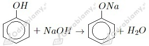

Alkohole:
b) fenylometanol
c) propan-2-ol
f) 2-fenyloetan-1-ol
Fenole:
a) 3-metylobenzenol
d) benzenol
e) benzeno-1,4-diol
a)
b)
c)
d)
e)
f)
a)
b)

c)
Wzór półstrukturalny:
Masa cząsteczkowa fenolu to 94 u, masa atomowa węgla wynosi 12 u, masa atomowa wodoru to 1 u, zaś tlenu 16 u. Liczymy skład procentowy pierwiastków w fenolu:
a)
b)
a)
b)
c)
d)
e)
f)
g)

h)
i)
j)
Zarówno fenole jak i alkohole wykazują kwasowy charakter chemiczny, jednak w przypadku alkoholi jest on bardzo słaby (słabszy od wody). Wodny roztwór alkoholi ma odczyn obojętny, zaś fenoli kwasowy. Fenole, w przeciwieństwie do alkoholi, mają zdolność dysocjowania na jony w roztworze wodnym. Grupą funkcyjną zarówno w cząsteczkach fenoli jak i alkoholi jest grupa hydroksylowa. Fenole są bardziej reaktywne od alkoholi.
Opisana reakcja pozwoliła na zidentyfikowanie benzenolu (fenolu). Jest to reakcja charakterystyczna fenoli, pozwalająca wykryć nawet ich śladowe ilości.
1. Reakcja z wodą bromową:

Obserwacje: W probówce zawierającej fenol następuje odbarwienie wody bromowej, zaś w probówce z etanolem brak objawów reakcji.
2. Reakcja ze stężonym kwasem azotowym(V):
Obserwacje: W probówce zawierającej fenol wytrąca się żółty osad, zaś w probówce z etanolem brak objawów reakcji.
3. Reakcja z chlorkiem żelaza(III):

Obserwacje: W probówce zawierającej fenol roztwór przyjmuje fioletową barwę, zaś w probówce z etanolem brak objawów reakcji.